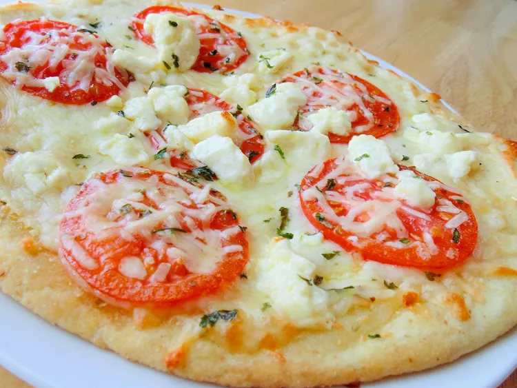

Pizza

Hungry for Pizza?
Imagine a thin, crispy crust topped with a rich, tangy tomato sauce, a
generous layer of melted mozzarella cheese, and your favorite toppings.
Picture the gooey cheese stretching as you take a bite, revealing a perfect
balance of flavors. The aroma of freshly baked dough and sizzling cheese will
have your mouth watering, leaving you craving a slice of pure, cheesy bliss.
- Pre made pizza dough
- Tomato sauce
- mozzarella cheese
- Pepperoni
- Oregano
-
Preheat your oven to the temperature specified on the pizza dough or crust
package.
- Roll out the dough on a floured surface or use a pre-made crust.
-
Spread the tomato sauce evenly over the dough, leaving a small border.
- Sprinkle with mozzarella cheese and your desired toppings.
-
Drizzle with olive oil and season with garlic powder, oregano, and basil
(optional).
-
Bake in the preheated oven until the crust is golden brown and the cheese is
bubbly.
-
Remove from the oven and let cool for a few minutes before slicing and
serving.